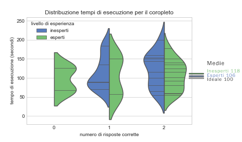
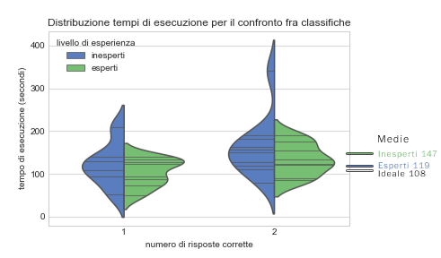
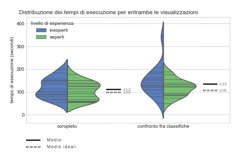
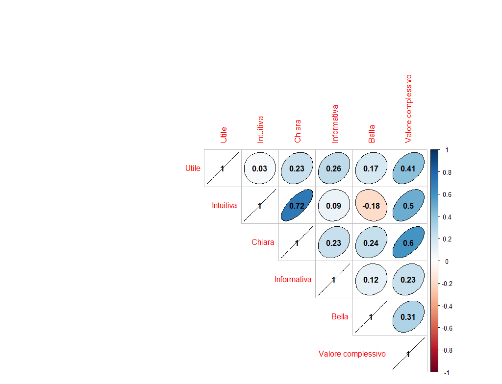
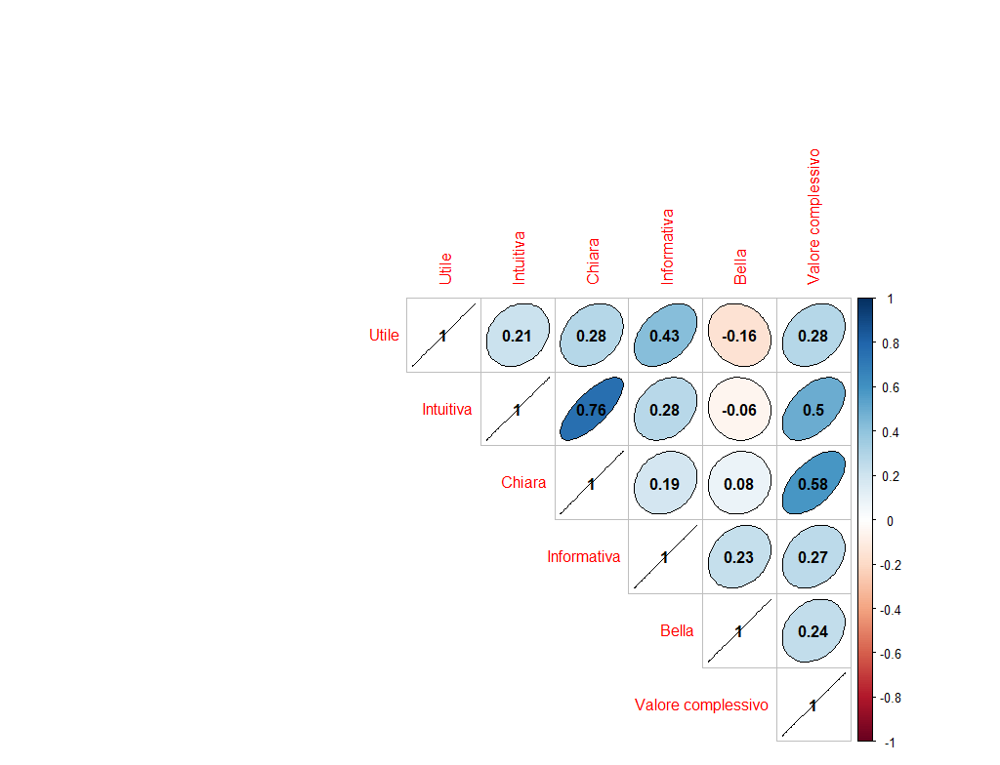

Al netto di alcune sorprese (Italia posizionata nella metà infelice pur con una situazione economica abbastanza favorevole) risulta subito evidente che paesi con un GDP più alto tendono ad avere un più alto livello di felicità. Il dato appare evidente guardando a un occidente molto più felice rispetto al resto del mondo. Risulta poi notevole l’incidenza della fertilità, più alta in tutti i paesi con GDP e Felicità più bassa.
Per approfondire queste relazioni tra variabili abbiamo costruito una visualizzazione che permettesse di fornire un confronto tra classifiche riguardanti i quattro parametri. Di volta in volta i due assi verticali paralleli ordinano i paesi sulla base di due dei quattro indicatori considerati. Le linee che tagliano al centro unendo le due classifiche vanno ad associare la posizione di un paese tra i due ranking mostrando gli spostamenti tra una classifica e l’altra. Questo confronto è stato fatto per tutte le possibili combinazioni.
Per fare un esempio, come si comportano i paesi ben posizionati nel GDP riguardo invece alla felicità? Il grafico sotto mostra le variazioni di questa classifica. E scopriamo quindi che la Somalia si fa protagonista di un notevole recupero di ben 77 posizioni tra una classifica e l’altra: 154esima per GDP ma 77esima per felicità. Segno che, pur disponendo di scarse risorse economiche, si può comunque avere un paese sufficientemente felice.
Diverso è invece il caso della Grecia, che partendo da una dignitosa posizione nella classifica economica (38esima) converte male le sue risorse, posizionandosi in basso alla classifica di chi vive più felicemente (posizione 103), con una perdita di ben 65 posizioni. Lo stesso discorso può essere applicato agli altri confronti tra classifiche.

Questa visualizzazione mostra il suo profilo migliore nel momento in cui ad essere confrontato con gli altri parametri è il Fertility Rate. Le numerose intersezioni delle linee ci mostrano come ad alti livelli di fertilità corrispondano bassi livelli di felicità, di GDP e di aspettativa di vita. Questo sembrerebbe andare in controtendenza rispetto all’opinione diffusa per cui in alcuni paesi il motivo principale della scarsa fertilità sia la mancanza di assistenza alle famiglie e di welfare. E’ sufficiente ricordare a titolo d’esempio l’ondata di indignazione che emerse nel settembre 2016 come reazione alla campagna del Fertily Day promossa dal ministero della salute, riguardante la sensibilizzazione al tema della scarsa fertilità del nostro paese. In quel caso molti sottolinearono l’ironia di un governo che suggeriva ai propri cittadini di avere figli pur non garantendo un livello di welfare considerato come accettabile. Di fatto i paesi dove è presente più benessere sono quelli meno fertili e questo sembrerebbe, ad un primo sguardo, contraddire quelle critiche. Chiaramente il tema è complesso e non è detto che quanto suggerito dal grafico non possa essere dovuto a variabili intervenienti, ci limitamo a riportare la visualizzazione e a mostrare come di fatto il benessere correli negativamente con la fertilità di un paese.
Note metodologiche
DATASET
Per effettuare la nostra analisi siamo partiti da tre dataset presenti sulla piattaforma Kaggle e rappresentanti i World Happiness Reports di tre anni: 2015, 2016 e 2017. Dopo averli uniti in unico dataset abbiamo deciso di utilizzare le variabili “Country”, “Region”, “Happiness Rank”, “Happiness Score” ed “Year” a cui sono state poi aggiunte, al fine di mostrare un’analisi più completa, le variabili “GDP” (per capita), “Fertility Rate” e “Life Expectancy” recuperate dalle fonti citate nell’apposita sezione sulla destra. Da questi nuovi indicatori sono state create poi, semplicemente tramite un ordinamento decrescente su Excel, le variabili “GDP Rank”, “Fertility Rate Rank” e “Life Expectancy Rank”.
COROPLETO
La nostra prima visualizzazione, ottenuta tramite il software Tableau, è l’unione di una mappa coropletica e di un barchart. Abbiamo riprodotto la visualizzazione per tutte le variabili di nostro interesse, rispettivamente “Happiness”, “GDP”, “Fertility Rate” e “Life Expectancy”. Si è scelto come grafico principale il coropleto in quanto ben si prestava alla rappresentazione dei nostri dati: mostrare la distribuzione della variabile selezionata per più di 150 paesi su una mappa.
In alto a destra, nel riquadro bordato, è presente una breve legenda: essa indica la variabile target che si vuole visualizzare, il valore centrale scelto per tale distribuzione e una scala di colore che parte dall’arancione per arrivare al blu (con i loro vari livelli di intensità). La scala di colore inverten la tinta per i valori che si discostano negativamente (arancione) e positivamente (blu) dal valore centrale prescelto. Per tutte e 4 le variabili osservate viene scelto come valore centrale la mediana in quanto misura robusta, al contrario della media che è influenzata dalla presenza di outlier; solamente per “Happiness Score” viene scelto il valore 6, in quanto in una scala da 0 a 10 al fine di valutare la propria felicità percepita 6 ci è sembrato essere il valore rappresentante la sufficienza.
Puntando il cursore su una singola country nella mappa compaiono i details per tale paese, ovvero rispettivamente “Country”, “Region”, “Rank del paese per tale variabile” e “Valore reale di tale paese per tale variabile”. Se la mappa coropletica ben si presta a mostrare la distribuzione della variabile all’interno del globo, non è però altrettanto efficace nel far capire immediatamente la classifica dei vari paesi per la variabile scelta. Per questo viene aggiunto un barchart, dove sull’asse delle x troviamo il valore reale della variabile a cui si sottrae il valore centrale prescelto, mentre sull’asse delle y troviamo i paesi. E’ così possibile notare immediatamente la classifica. Il barchart presenta inoltre la stessa scala colore della mappa e gli stessi details. Peculiarità del barchart creato è la presenza di un’inversione di segno: le barre da positive diventano negative quando, scendendo di posizioni all’interno della classifica, i vari paesi iniziano ad avere un valore inferiore rispetto a quello centrale prescelto. Quest’inversione di tendenza rafforza quanto già indicato dai colori, ovvero quali paesi si ritengono “felici”, quali paesi hanno un “buon” pil pro capite, quali paesi hanno un alto fertility rate e infine quali un’alta aspettativa di vita.
Entrambi i grafici sono interattivi e quindi è possibile filtrarli per “anno” e “regione di interesse”, grazie ai filtri è possibile visualizzare sulla mappa quanti e quali siano i paesi “felici” in Asia nel 2015 e sul barchart osservare la classifica all’interno della regione scelta. E’ stato inserito inoltre un highlighter che fornisce la possibilità di digitare il nome di un singolo paese con la possibilità quindi di individuarlo sia sulla mappa che all’interno della classifica rappresentata attraverso il barchart.
CONFRONTO FRA CLASSIFICHE
La seconda visualizzazione di cui ci siamo voluti servire al fine di rappresentare al meglio ciò che volevamo dire coi dati è un grafico a coordinate parallele tramite il quale confrontare le classifiche: vengono poste su due assi delle x paralleli le variabili utilizzate in precedenza (Happiness Score, GDP, Fertility Rate e Life Expectancy) a due a due, mentre sull’asse delle y è visibile il rank (un numero da 1 a 161, ovvero il numero di paesi presenti nel dataset). Ogni linea unisce ciascun paese su una classifica con sé stesso nell'altra classifica, è così possibile confrontare la posizione in classifica di un paese per quanto riguarda “GDP” ed “Happiness” e vedere se tra le due variabili c’è un andamento lineare o meno. Viene poi creata la variabile “Lost/Scaled Positions” semplicemente sottraendo al rank della variabile posta a sinistra il rank di quella posta a destra così da individuare un incremento/decremento di posizioni in classifica. Questa nuova variabile viene poi inserita graficamente come colore, cosicchè se una country ha scalato delle posizioni presenterà una linea di colore blu, mentre se avrà perso delle posizioni presenterà una tonalità arancione (il livello di intensità del colore dipende dal numero di posizioni guadagnate o perse, maggiori esse sono più il colore risulterà intenso).
In alto sulla destra è presente una legenda; come filtri sono stati scelti “Year” e “Region” mentre come highlighter “Country”. I details sono rispettivamente, in ordine, “Country”, “Variabili d’interesse”, "Region" e “Lost/Scaled Positions”. E’ presente inoltre una caption al fine di rendere la visualizzazione più facile da interpretare.
Euristiche considerate
Nel costruire le infografiche abbiamo seguito alcune euristiche utili a orientare il nostro lavoro. Tra le principali:
Overview: abbiamo cercando di rendere le nostre infografiche sintetiche e intuitive. Soprattutto la prima, ma anche la seconda offrono una visione d’insieme che mostrano un’idea del fenomeno considerato.
Filtrare: attraverso le barre laterali è possibile scandagliare i dati selezionando quelli di maggiore interesse. E' possibile filtrare per anno, per paese o per regione.
Details-on-demand: la selezione di un oggetto permette di ottenere una notevole mole di informazioni, estraendi un elemento dalla visione di insieme più generica.
Estrazione: possibilità di estrarre dei dati in un formato alternativo ed eseguire il download completo del dataset.
Valutazione qualità
Abbiamo valutato empiricamente la qualità delle due visualizzazioni inserite nell'articolo coinvolgendo direttamente un campione di potenziali utenti tramite un doppio protocollo di misura diretta ed indiretta between group.
1) la misura diretta della fruibilità delle visualizzazioni è stata ottenuta sottoponendo ai soggetti un compito da svolgersi utilizzando i grafici. Abbiamo dunque misurato il tempo impiegato e registrato gli eventuali errori.
2) la misura indiretta dell'apprezzamento percepito delle visualizzazioni è stata invece ottenuta tramite la somministrazione di un veloce questionario basato su scale Likert.
Il compito e il questionario sono stati sottoposti in successione per entrambe le visualizzazioni, ciascun soggetto ha dunque svolto in quest'ordine: il compito sul cartogramma, il relativo questionario, il compito sul confronto tra classifiche e il relativo questionario. Prima di ciascun compito è stato dato circa un minuto ai soggetti per prendere confidenza con la visualizzazione corrispondente al compito. L'esatta copia del testo ricevuto dai soggetti è tra i materiali da scaricare sulla destra.
IPOTESI
Nel contesto della valutazione della qualità delle nostre visualizzazioni abbiamo voluto verifificare se ci fosse o meno una differenza significativa fra utenti più o meno abituati all'utilizzo di grafici e al trattamento di dati rispetto ai tempi di esecuzione del compito, agli errori compiuti e alle risposte fornite al questionario di apprezzamento. Per far questo abbiamo suddiviso i nostri soggetti in due gruppi, il primo composto da studenti della magistrale di psicologia sociale della Bicocca e da studenti TTC (includendo solo studenti TTC che non hanno inserito l'esame di Data Visualisation nel piano di studi). Questo primo insieme di studenti corrispondeva al gruppo verosimilmente meno esperto. Il secondo gruppo era invece composto da studenti della magistrale di informatica e da studenti di DS e corrisponeva al gruppo più esperto.
Abbiamo inoltre confrontato i tempi di esecuzione di entrambi i gruppi con un tempo di esecuzione ideale. Per ottenere il tempo ideale di esecuzione quattro di noi hanno svolto per tre volte gli stessi compiti presentati ai soggetti per entrambe le visualizzazioni. La prima volta con l'istruzione di svolgere il compito il più velocemente possibile, la seconda di svolgerlo con naturalezza, la terza di svolgerlo in modo volutamente esitante. La media del tempo impiegato in tutte le modalità per tutti e 4 i creatori dei grafici coinvolti è una misura indiretta del tempo ideale di svolgimento del compito.
SOGGETTI E MATERIALI
I soggetti coinvolti sono tutti studenti della Bicocca di età compresa tra i 22 e i 29 anni suddivisi in 17 donne e 15 uomini per un totale di 32 persone. I soggetti si suddividono inoltre sulla base della facoltà di appartenenza per consentirci di indagare la nostra ipotesi: 8 DS, 8 informatici, 8 TTC e 8 PPSDCE. La suddivisione di uomini e donne rispetto al fattore "facoltà" è stato il più possibile pareggiata, ma generalmente non ci sono considerazioni teoriche che possano farci immaginare un'influenza di questo fattore.
I grafici sono stati presentati ai soggetti dallo schermo di un computer per mantenerne l'interattività, mentre il questionario è stato volutamente stampato in modo da consentire ai soggetti di poter avere sempre davanti sia le domande che i grafici senza dover alternare lo spazio di risposta e le dashboard sullo schermo.
TEST UTENTE
Per ciascuna delle due dashboard è stato sottoposto ai soggetti un compito, ciascuno dei due compiti consisteva nel rispondere a due domande puntuali la cui risposta era da trovarsi nei grafici stessi. Le domande sono state pensate per obbligare i soggetti ad interagire con le visualizzazioni, ad usare i filtri e le varie componenti della dashboard, inoltre, per ciascuna delle domande, si poteva cercare la risposta tramite diverse modalità di interazione, ma alcune interazioni erano chiaramente più efficenti e consentivano di arrivare più velocemente all'informazione richiesta.
Per testare l'ipotesi dell'esistenza di una differenza nei tempi di esecuzione tra i due gruppi (esperti/inesperti) abbiamo eseguito un t-test per campioni indipendenti sui tempi di entrambi i compiti, ma non è emersa nessuna differenza significativa (t=0,858 p=0,19 per il cartogramma. t=1,486 p=0,07 per il confronto fra classifiche). Abbiamo poi analizzato la correttezza delle risposte cercando differenze tra i due gruppi tramite l'utilizzo di tabelle di contengenza. Prima abbiamo eseguito il test di Fisher su 4 diverse tabelle di contingenza 2X2 contentenenti su un asse sempre i due livelli di esperienza e sull'altro il numero di riposte giuste e sbagliate alle 4 domande (ricordiamo che i compiti sono 2 con 2 domande a compito). Nessuno dei 4 test di Fisher ha mostrato differenze significative (per le due domande del compito sul cartogramma p=0,5 e p=0,34 mentre per le due domande sul confronto tra classifiche p=0,23 e p=0,5). Abbiamo poi eseguito il test di Fisher sulle due tabelle di contingenza contenenti su un asse i due livelli di esperienza e sull'altro il numero di errori e di risposte giuste per entrambe le domande di ciascun compito. Anche in questo caso non sono emerse differenze significative né per il cartogramma (p=0,5), né per il confronto fra classifiche (p=0,38).
Nei grafici 1 e 2 trovate visualizzato il tempo impiegato per i due compiti suddiviso per livello di esperienza e per numero di risposte corrette che vanno da 0 a 2 essendoci 2 domande per compito (nessuno ha dato zero risposte corrette al compito sul confronto tra classifiche). Nella parte destra del grafico trovate la media del tempo impiegato dagli utenti esperti, la media per gli inesperti e la media di esecuzione ideale (100 secondi per il cocopleto, 108 seondi per il confronto fra classifiche).
Grafico 1

Grafico 2

Nell'analizzare i dati ci siamo accorti che c'erano grandi differenze nei tempi di risposta tra le risposte date al compito sul cartogramma e quelle date al compito sul confronto fra classifiche. Volendo quindi confrontare i tempi non rispetto ai due livelli di esperienza, ma rispetto al grafico testato abbiamo eseguito un t-test e questa differenza si è confermata essere significativa (t=-2,229 p=0,01). Sempre in quest'ottica abbiamo anche confrontato il numero di errori con un test di Fisher su una tabella di contingenza 2X2 contenente su un asse il compito e sull'altro asse risposte giuste e sbagliate (sommando entrambe le domande per ciascun compito), ma non sono emerse differenze significative (p=0,5). Nel grafico 3 si possono visualizzare i tempi di risposta suddivisi per compito e livello di esperienza con le corrispettive medie effettive ed ideali corrispondenti a ciascun compito.
Grafico 3

QUESTIONARI PSICOMETRICI
Dopo ciascuno dei due compiti ai soggetti è stato chiesto di compilare un questionario di gradimento relativo alla visualizzazione corrispondente. Il questionario consisteva in 6 item (utile, intuitiva, chiara, informativa, bella, valore complessivo) presentati tramite una scala Likert a 5 livelli. Si è scelto consapevolmente di utilizzare una scala Likert dispari perché riteniamo che forzare la polarizzazione delle risposte tramite una scala pari sia troppo poco ecologico nonostante appaia indubbiamente come una scelta comoda per ottenere dati più chiari ed orientati.
Per indagare la nostra ipotesi secondo la quale dovrebbero emergere differenze nelle risposte ai questionari sulla base del livello di esperienza abbiamo eseguito un test di Mann-Whitney per ciascuno degli item di ciascun questionario ottenendo risultati siginificativi solo per l'item di intuitività usato nella valutazione del cartogramma (Ua=179 p=0,02)
Infine considerando le risposte da 1 a 3 (incluso) come risposte negative e i 4 e 5 come risposte positive possiamo trasformare le risposte ai diversi item in variabili dicotomiche e fare un test della binomiale per valutare la polarizzazione. Così facendo abbiamo verificato che la maggior parte degli item per entrambi i questionati si sono dimostrati polarizzati positivamente con l'eccezione di "intuitiva", "chiara" e "bella" per il confronto fra classifiche che però non risultano polarizzati neanche negativamente (per il questionario sul coropleto abbiamo: utile p<0,01 0,906 vs 0,093; intuitiva p<0,01 0,875 vs 0,125; chiara p<0,01 0,875 vs 0,125; informativa p<0,01 0,968 vs 0,031; bella p<0,01 0,906 vs 0,093; complessiva p<0,01 0,937 vs 0,062. Il questionario sul confronto tra classifiche invece ci dà: utile p<0,01 0,937 vs 0,062; intuitiva p=0,29 0,437 vs 0,562; chiara p=0,43 0,531 vs 0,468; informativa p<0,01 0,843 vs 0,156; bella p=0,10 0,625 vs 0,312; complessiva p<0,01 0,781 vs 0,218).
Nei grafici 4 e 5 si può visualizzare la percentuale di risposte positive (4-5), negative (1-2) e neutre (3) di tutti i soggetti coinvolti per i due questionari.
Grafico 4

Grafico 5

Nei grafici 6, 7, 8 e 9 invece la percentuale di risposte è suddivisa in base ai due livelli di esperienza
Grafico 6
.png)
Grafico 7
.png)
Grafico 8
.png)
Grafico 9
.png)
Per concludere le analisi abbiamo voluto esplorare eventuali correlazioni tra gli item del questionario e visualizzare la matrice di correlazione tramite un correlogramma (grafico 10 per il coropleto, grafico 11 per il confronto fra classifiche). Per il coropleto le correlazioni tra item significative sono: valutazione complessiva-utilità (p=0.01), valutazione complessiva-intuitività (p=<0.01), valutazione complessiva-chiarezza (p<0,01) e intuitività-chiarezza (p<0,01). Per il confronto fra classifiche le correlazioni significative sono: valore complessivo-intuitività (p<0,01), valore complessivo-chiarezza (p<0,01) e intuitività-chiarezza p(<0,01) e utilità-informatività (p=0,01). Il valore della correlazione e la sua direzione potete osservarla nei grafici.
Grafico 10

Grafico 11
